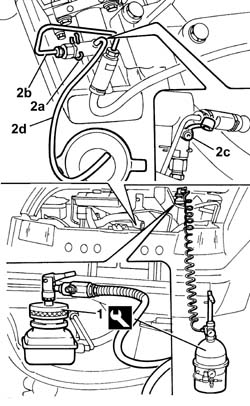

0010T67 HYDRAULIC CLUTCH SYSTEM BLEED AIR
- Path
- Procedures > 00 MAINTENANCE > 0010 NEW UNITS AND PLANNED MAINTENANCE > 0010T VEHICLE OIL AND FLUIDS > 0010T67 HYDRAULIC CLUTCH SYSTEM BLEED AIR
- Kind
- repair procedure (removal / refitting; the operation number is the code)
- Applies to
- all engines; all production periods
- Interactive page
- https://sloeber94.github.io/elrnDB-fDct/en/#/244000608
Applies to: all engines; all production periods
- Check that the brake/clutch fluid in the reservoir is at the maximum level; if this is not the case, top up using the recommended fluid.
- When topping up the brake/clutch fluid, remove the reservoir cap and top up until the maximum level is reached.
 | Description | Qty. | Component | Type | Classification |
|---|---|---|---|---|---|
. | TUTELA TOP 4 | Litri | BRAKE FLUID | Synthetic fluid | NHTSA. 116 DOT 4 ISO 4925 CUNA |
- The symbol on the container identifies synthetic type brake/clutch fluids, distinguishing them from mineral type fluids. The use of mineral type fluids irreparably damages the special rubber seals in the hydraulic brake/clutch system.
- Position the vehicle on a lift.
- Check that the brake/clutch fluid is between the MIN and MAX levels.
1. Remove the brake/clutch fluid reservoir cap and connect the equipment to the reservoir.
 | Description | Code | Function |
|---|---|---|---|
1 | - | 1.806.097.000 | Hydraulic circuit air bleeding equipment |
2. Lift up the spring (2a) and move the oil pipe (2b) back until the first click in order to open the bleed valve incorporated in the actuator, then open the cap (2c) and connect the recovery device (pipe and reservoir) to the bleed valve on the actuator (2d).
- Open the fluid reservoir tap slowly.
- Wait until all the air in the hydraulic system has escaped.
- Push the fluid pipe towards the actuator and lock it in position using the retaining spring.

Topics that link to this page (11)
- 1820B10 CLUTCH FLUID TANK - R + R AND WASH INSIDE
- 1820B20 MASTER CYLINDER (PUMP) - R + R
- 1820B30 SLAVE CYLINDER - R + R
- 1820B41 HOSE FROM CLUTCH RESERVOIR TO MASTER CYLINDER (PUMP) - R R FOR RH DRIVE VERSIONS
- 1820B45 RIGID DELIVERY PIPE FROM MASTER CYLINDER (PUMP) - R R FOR RHD VER SIONS
- 1820B46 HOSE FROM CLUTCH PUMP - R R
- 1820B57 PIPE FROM VIBRATION DAMPER TO SLAVE CYLINDER
- 1820B58 CLUTCH HYDRAULIC CIRCUIT VIBRATION DAMPER - R+R
- 3330B26 CLUTCH PEDAL - R+R
- 3330B27 CLUTCH PEDAL - R R FOR RHD VERSIONS
- 7040L17 PASSENGER COMPARTMENT FLOOR FRONT CARPET - R R